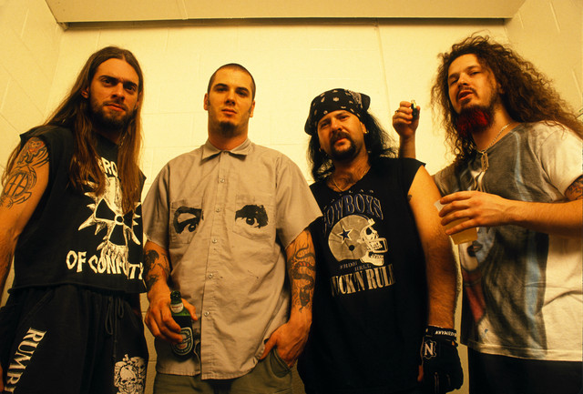
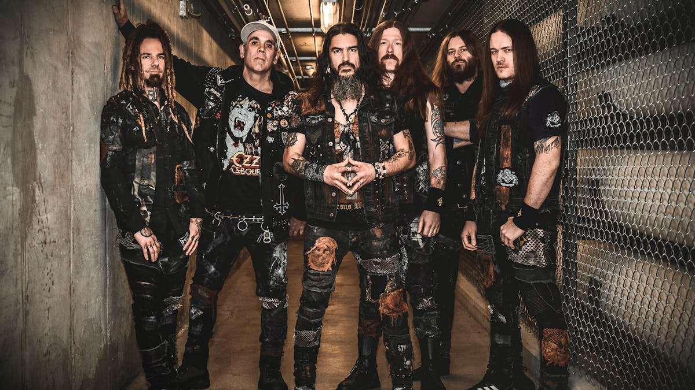

How It Came to Be
This genre began with bands combining the guttural vocals of death metal with the sounds and instrumentals of thrash metal. As a result, older thrash metal bands started releasing groove metal albums. The band that truly popularized the genre was Pantera, as their lead singer, Phil Anselmo, had a naturally deep voice that perfectly suited the deep vocals the band was looking for.
Clothes Worn & Culture
This genre did not have a specific look. However, due to its death and thrash metal influences, many people adopted the comfortable attire associated with death metal and the jean vests characteristic of thrash metal.
Sad Facts
When the band Pantera broke up in the early 2000s, former guitarist Dimebag Darrell joined another band called Damageplan. In 2004, a shooting occurred at the beginning of one of their concerts, during which Dimebag Darrell was shot and killed. To this day, this tragedy is considered one of the worst deaths in metal history, as it happened live in front of the audience.
Songs
Click on an image to see the history of one of the metal genres